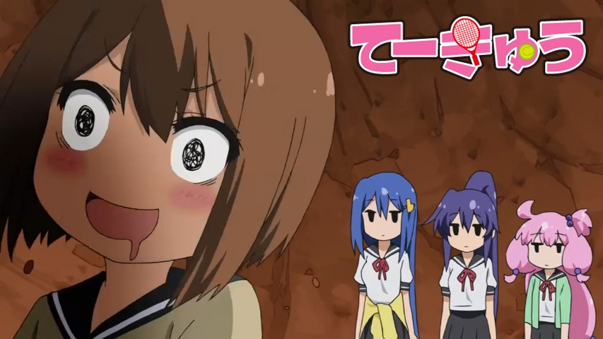

Teekyuu Saison 7 Ep 1 à 4 vostfr

Bonjour!
Me voici comme le messie, annonçant la saison 7 de Teekyuu!
Dans ces épisodes, des trucs louches, une ballade à la montagne, des fruits...enfin non, c'en est pas vraiment...


Bonjour!
Me voici comme le messie, annonçant la saison 7 de Teekyuu!
Dans ces épisodes, des trucs louches, une ballade à la montagne, des fruits...enfin non, c'en est pas vraiment...
Bonsoir à tous!
Un épisode sympathique cette fois, un de mes préférés.
Je m'excuse d'avance pour le trou dans l'image à 20:08, souvenir de mon problème de mémoire qui a dégradé certains de mes fichiers. Si jamais d'autres épisodes en portent la trace...
Salut à tous!
Voici la fin de Teekyuu 6, une très bonne saison je trouve, même supérieure aux premières. Qu'en dites-vous ?
On se dit à la prochaine...
Bonsoir,
Un nouvel épisode, un! Avec même un panty shot discret, ça vous en bouche un coin :P
Et effectivement, une pause avec un petit thé, ça ne fait jamais de mal. On ne facture pas la toppissitude ni la séductivité!
Comme d'habitude, n'hésitez pas à signaler la moindre erreur qui...

Salut la compagnie!
Attention, les épisodes de cette semaine sont particulièrement délirants. Ça remue les zygomatiques!
Allez, profitez bien!